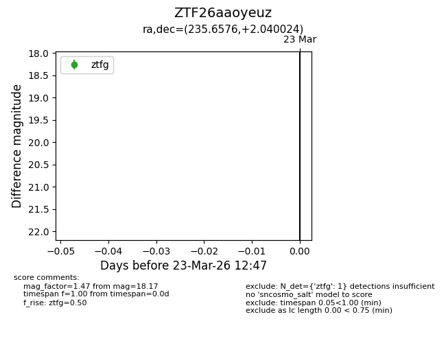
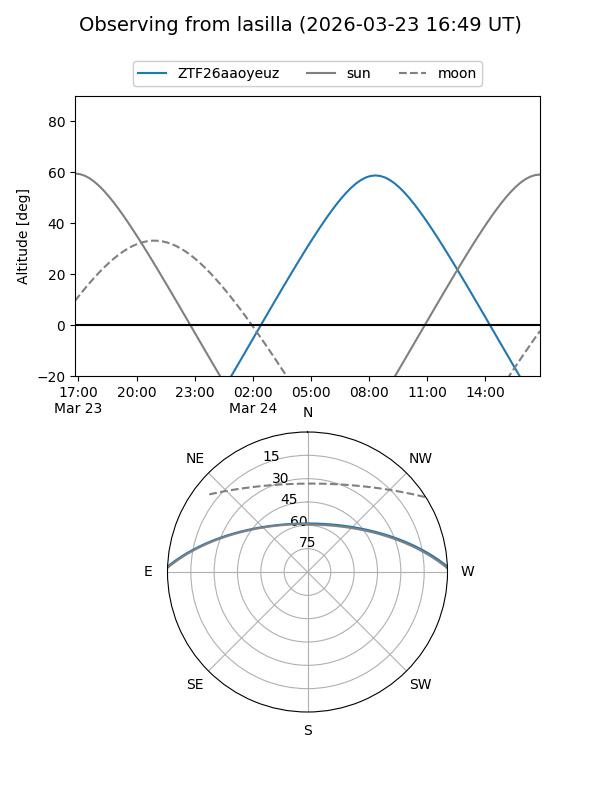
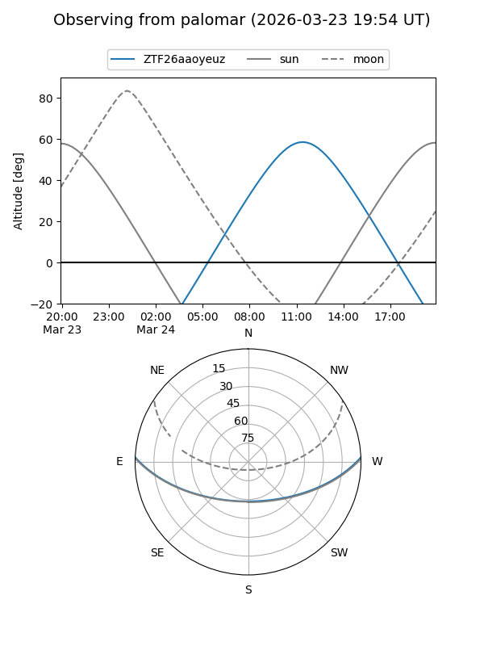

ZTF26aaoyeuz
Target ZTF26aaoyeuz at 2026-03-23 12:49
Aliases and brokers:
FINK: link
Lasair: link
ALeRCE: link
alt names
ZTF26aaoyeuz (ztf,fink_ztf)
Coordinates:
equatorial (ra, dec) = 235.6576,+2.04002
equatorial (HMS+DMS) = 15:42:37.82,+02:02:24.09
galactic (l, b) = (8.9051,+41.97829)
Flags:
Photometry:
last ztfg=18.17
1 ztfg detections
Lightcurve

Visibility


Additional plots